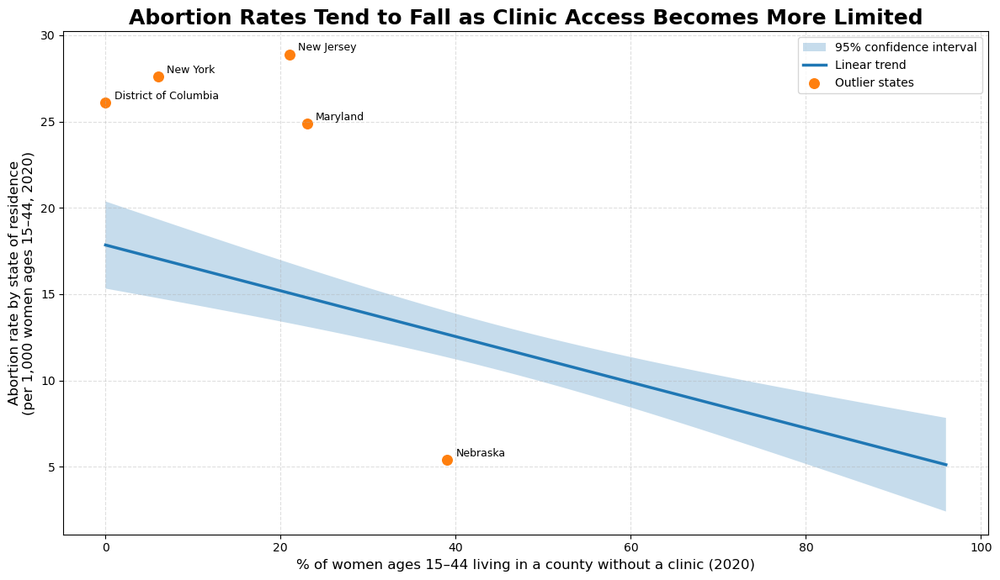
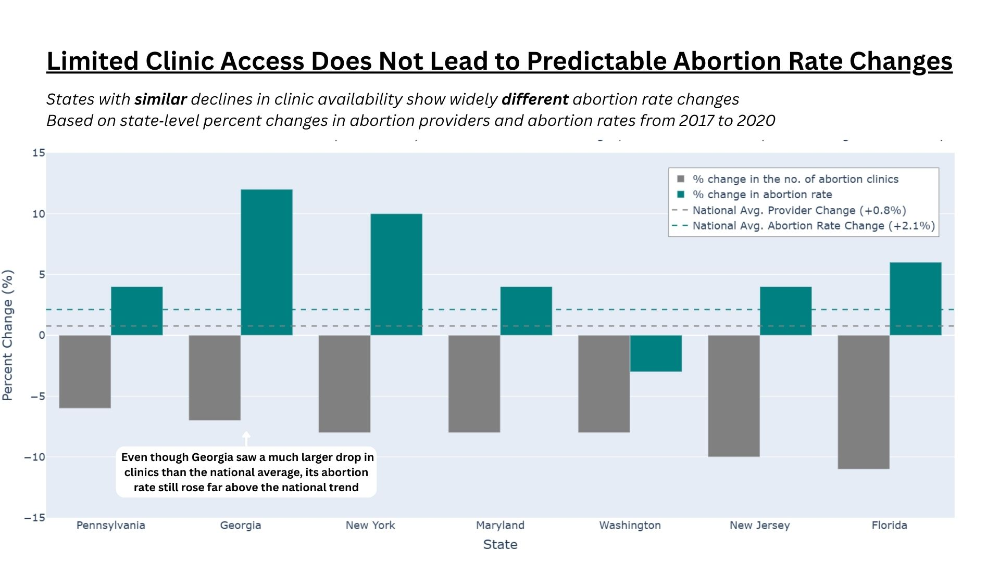

Proposition: States with limited abortion access are effectively restricting abortion
FOR the Proposition:
States with very limited provider access generally have lower abortion rates, suggesting access restrictions are effective.

Design Decisions and Rationale:
1. Replaced the full scatterplot with a regression line and confidence interval
Earnestness Score: -1.0
The visualization simplifies the older scatter plot into a downward regression line with a 95% confidence interval. This new graph reduces clutter and shows the negative relationship between clinic access and abortion rates more clearly. This is somewhat deceptive because hiding most of the points makes it so the variability of the full dataset can’t be accurately accessed. A more transparent alternative would be to display all points with transparency, but the simplified graph better conveys the argument.
2. Displayed and labeled only notable outlier states
Earnestness Score: -1.5
Only a few outlier states are shown as labeled points, such as New York, New Jersey, Maryland, and Nebraska. This focuses attention on states that strongly deviate or follow the trend without visually overcrowding. This visualization is deceptive because choosing which points to show changes how viewers view the overall distribution of the data. Including all states would have provided a more complete picture, but emphasizing only outliers made the trend easier to interpret and more effective.
3. Used a strong declarative title emphasizing the trend
Earnestness Score: -1.0
The title states that abortion rates “tend to fall” as abortion clinics decrease. This makes the viewer see the graph as being meaningful and directional. The wording strengthens the intended argument and makes the conclusion appear clearer and more confident. This is somewhat deceiving because the visualization shows correlation rather than direct causation. A more neutral title would have simply described the relationship, but the more assertive title makes the intended message more compelling.
AGAINST the Proposition:
Even in states with very limited provider access, abortion rates are not consistently low, suggesting access restrictions are not reliably effective

Design Decisions and Rationale:
1. Filtered the data to only include states with similar provider declines
Earnestness Score: -1.0
This visualization only includes a subset of states that experienced a similar decline in the number of abortion clinics. This was done to show whether abortion rates changed consistently under comparable conditions. This decision strengthens the argument because states with similar decline in abortion clinics show very different abortion-rate outcomes. However, excluding many states is deceptive because including them could weaken the argument. An alternative would be to include all the states but visually highlighting the comparison group, but filtering produced a cleaner and more convincing narrative.
2. Added national average reference lines
Earnestness Score: +1.5
The chart includes a national average line for provider change and abortion rate change, which gives viewers a benchmark to contextualize if a state is above or below the national trends. This makes comparisons easier to interpret. This decision is earnest because it adds context rather than hiding information. The averages help show how different states behaved compared to the national average. Another possible approach was to show the national averages numerically in the caption, but having a line for the national averages makes for easier understanding.
3. Reframed the title and subtitle to directly state the argument
Earnestness Score: -0.5
The revised title explicitly states the takeaway from the chart, that states with similar abortion provider change have very different abortion change rates. The subtitle reinforces this argument by saying that there is inconsistency in abortion change rates across states with similar abortion provider change. This is slightly deceptive because the words in the title bias the viewers perspective rather than remaining neutral. A less biased alternative would be to title it “Comparing State-Level Changes in Clinic Access and Abortion Rates,” but the stronger phrasing better helped convey the intended argument.
Final Reflection
Designing these two visualizations made clear that persuasive data visualization is not only about presenting facts, but more about making choices about what to emphasize, what to omit, and how to frame arguments during the research process. One straightforward part of the process was seeing how design choices like titles, filtering, annotations, and selective highlighting could shape a reader’s interpretation. In the “For” visualization, we are emphasizing the regression trend and omitting variability, which made the relationship between limited clinic access and abortion rates appear stronger and more consistent than it actually is. The “Against” visualization focuses on an intentionally chosen subset of states that show no apparent association between limited clinic access and abortion rates, which weakens the proposition. What was hard was recognizing how subtle many persuasive techniques can be. For example, adding the national averages could feel informative and somewhat manipulative depending on the context.
What surprised our group the most was how hard it is to draw a clear line between acceptable persuasion and misleading visualization. Many of the strong, persuasive visualization choices rely on framing, selective emphasis, or simplifications without being directly false or fabricated, yet still can be misleading. For example, filtering comparison groups or omitting some variability can help make a point clearer, but they also lead to biased interpretation by readers at the same time. This made our group think that ethical visualization is more about being transparent about what techniques are used to obtain the graphs. We found that the “against” visualization felt stronger because the inconsistent state patterns made the “For” proposition weaker than we initially thought.
After this project, we see ethical analysis and visualization as finding the balance point between transparent persuasion and context. We think acceptable persuasive choices should be the ones that guide attention or clarify a pattern while still allowing the audience to interpret the evidence fairly. On the other hand, misleading choices cross the bounds when they hide critical evidence against their claims or imply way stronger relationships than the data support. However, the project 2 assignment shows that these boundaries are usually blurred instead of static. So our group thinks that whether a graph is a persuasive visualization or a misleading visualization is dependent on the author’s intent and context more than just the graph itself. The project made us see that visualization is not just about presenting data, but more about making ethical arguments through its designs.